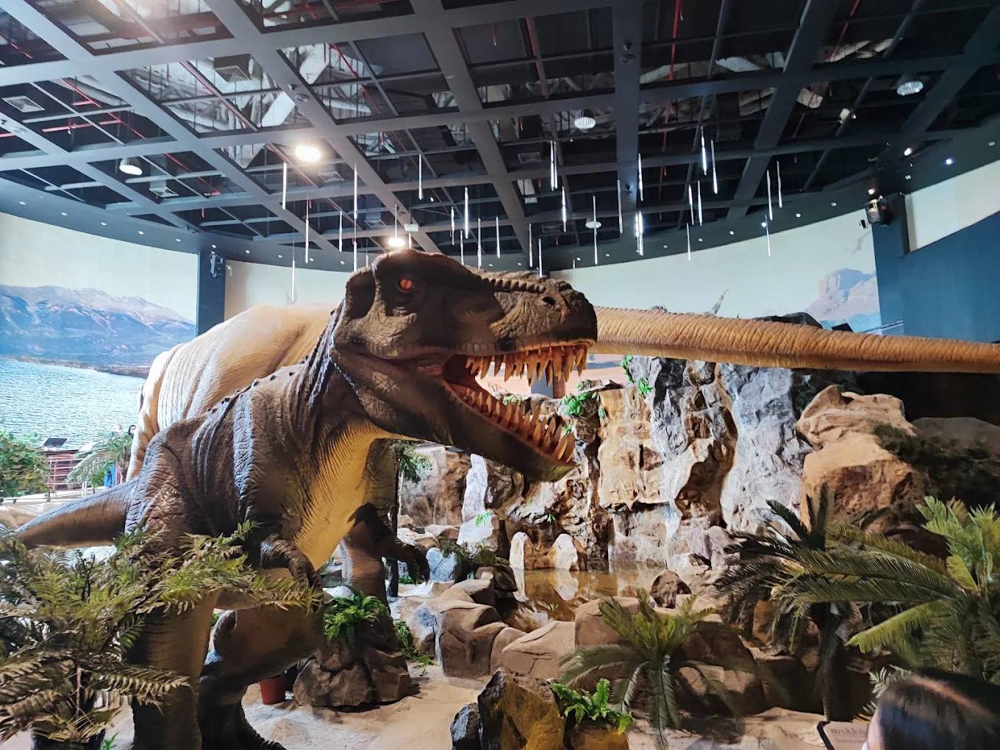
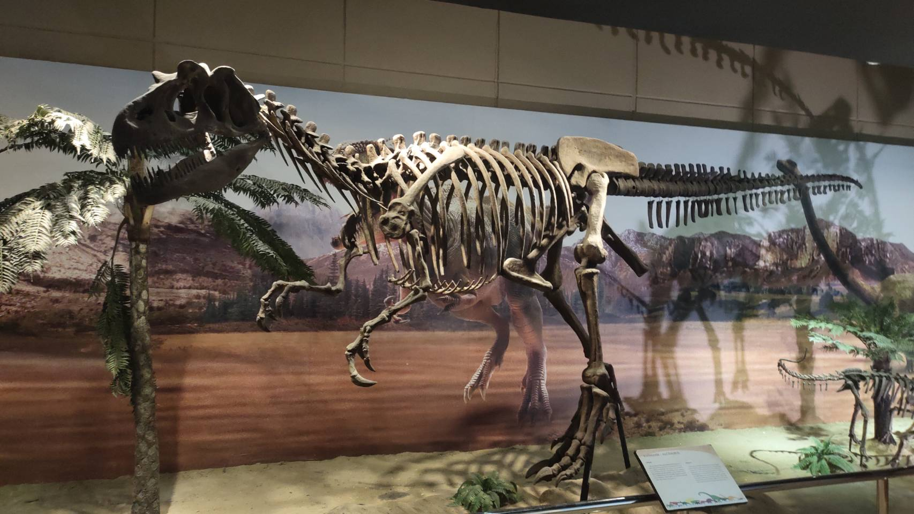
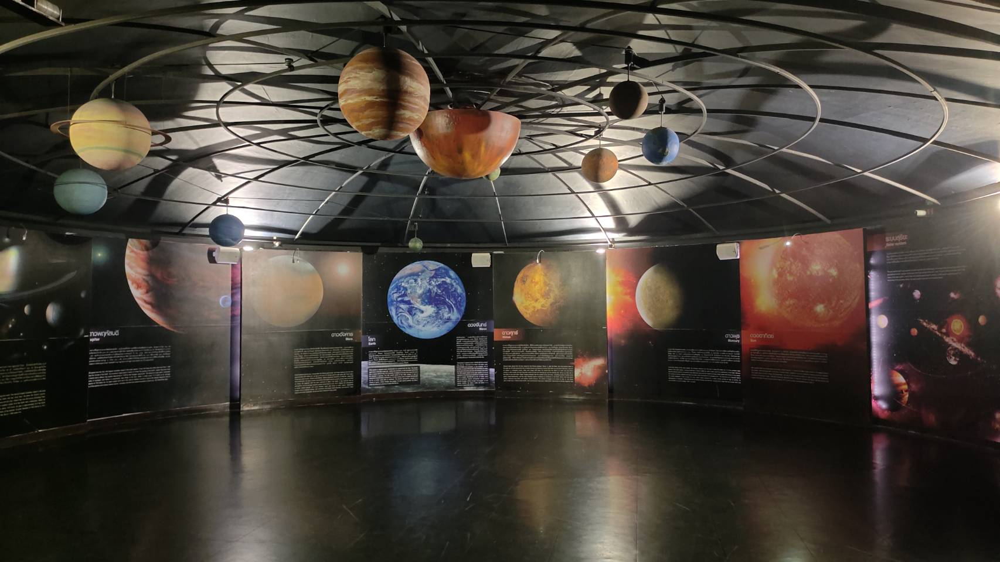
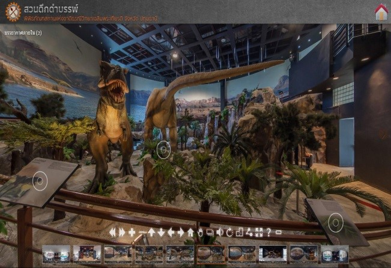
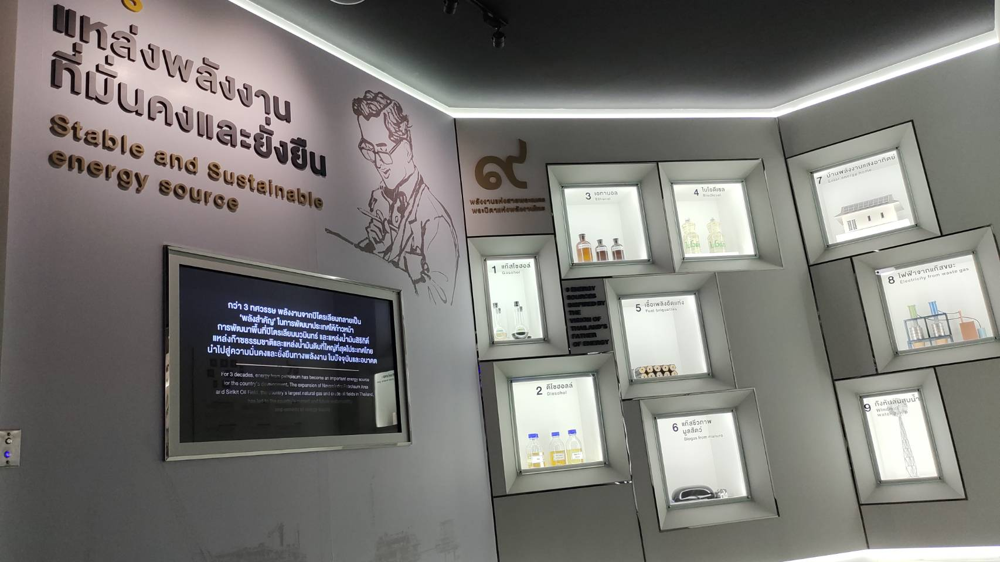

พิพิธภัณฑสถานแห่งชาติธรณีวิทยาเฉลิมพระเกียรติ
พิพิธภัณฑสถานแห่งชาติธรณีวิทยาเฉลิมพระเกียรติเป็นสถานที่จัดแสดงและจัดเก็บตัวอย่างอ้างอิงของประเทศ (เฉพาะชิ้นที่สำคัญ) และจัดแสดงนิทรรศการเผยแพร่ความรู้ด้านธรณีวิทยา รวมทั้งเหมืองแร่ น้ำบาดาล ปิโตรเลียม ประวัติความเป็นมาของโลก ซึ่งเป็นความรู้ด้านสาขาต่างๆของวิชาธรณีวิทยาทั้งหมดเป็นศูนย์ประสานงานเชื่อมโยงความรู้กับศูนย์วิจัยหรือพิพิธภัณฑ์อื่นภายใต้ความดูแลของกรมทรัพยากรธรณี มีวัตถุประสงค์หลักดังนี้ 1) เพื่อเฉลิมพระเกียรติพระบาทสมเด็จพระเจ้าอยู่หัวภูมิพลอดุลยเดช ปรมินทรมหาราช ในวโรกาสที่ทรงครองราชสมบัติครบปีที่ 50 ในวันที่ 9 มิถุนายน พ.ศ. 2539 2) เพื่อให้เป็นศูนย์กลางการบริหารจัดการแหล่งซากดึกดำบรรพ์ระดับประเทศ รวมทั้งเป็นแหล่งศึกษาวิจัยและถ่ายทอดความรู้ทางด้านธรณีวิทยาและซากดึกดำบรรพ์ 3) เป็นสถานที่อนุรักษ์แหล่งข้อมูลอ้างอิง และตัวอย่างที่สำคัญทางธรณีวิทยา ตลอดจนถึงซากดึกดำบรรพ์ที่มีคุณค่าหาได้ยากในโลก 4) เป็นพิพิธภัณฑ์แห่งชาติทางด้านธรณีวิทยาและซากดึกดำบรรพ์ และเป็นแหล่งรวบรวมความรู้และการเรียนรู้ทางด้านธรณีวิทยาและซากดึกดำบรรพ์ 5)เพื่อให้เป็นสถานที่ที่ประชาชนชาวไทยได้ศึกษาค้นคว้าหาความรู้ในเรื่องของธรณีวิทยาอันมีบทบาทสำคัญต่อการดำรงชีวิตของมนุษย์ ตลอดจนการวางแผนการใช้ประโยชน์ที่ดินและทรัพยากรธรณีอื่นๆ
ห้องจัดแสดงซากดึกดำบรรพ์
ห้องจัดแสดงระบบสุริยะ
หุ่นไดโนเสาร์จำลอง
ห้องจัดแสดงปิโตรเลียม
ไปที่ พิพิธภัณฑสถานแห่งชาติธรณีวิทยาเฉลิมพระเกียรติ